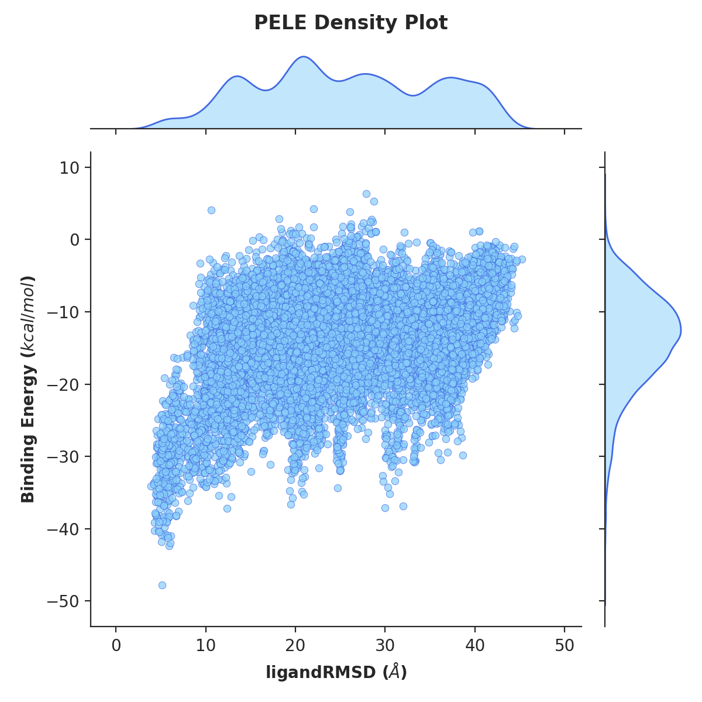

Analysis¶
Output files¶
Folder structure¶
Each simulation will create a number of output folders, as indicated on the tree below.
.
└── LIG_Pele
├── output
└── results
├── top_poses
├── plots
└── clusters
The output folder contains raw output files such as detailed metrics reports and trajectory snapshots for every step, whereas the
results directory holds a more user-friendly, curated output comprising of three separate folders:
top_poses- top 100 lowest binding energy structuresplots- plots of multiple metrics selected by the userclusters- lowest binding energy cluster representatives and clustering plots.
Detailed metrics¶
Additionally, the simulation will create a two CSV files with more detailed metrics:
results/data.csvcontains a summary of all created poses together with their metrics and the clusters they belong toresults/clusters/info.csvprovides detailed metric on each cluster, such as its population, mean RMSD, energy percentiles, etc.
Plots¶
The software will automatically create scatter plots for all metrics, however, if you want to enhance your analysis, you can check out our PELE Plotter script. See this tutorial to get more information.
Kernel density estimate plot¶
The KDE plots can aid the simulation analysis by visualising the distribution of ligand poses (similarly to a histogram)
in respect to plotted metrics, such as distance between two atoms (atom_dist) or solvent exposed surface area (SASA).
All you have to do is include the kde: true flag in your input.yaml. Additionally, you can influence the number of
poses plotted using the kde_structs flag, where the default included 1000 best energy poses.
kde: true
kde_structs: 200
Example plot of ligand RMSD vs binding energy.
{kind=link}
Clusters¶
Once the ligand clustering is finished, this folder will contain PDB files with the representatives of each selected cluster (marked with a letter) as well as a CSV summary of metrics for all clusters, not only the selected one.
For each metrics there’s a box plot to provide the user with a quick, intuitive overview of the clusters.

Moreover, the overall simulation metrics coloured by cluster are plotted to easily compare the performance of each cluster throughout the simulation.